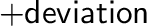
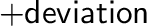

Next: selection.unbuild() undefine Up: The selection class: handling Previous: selection.superpose() superpose Contents Index
This command changes the dihedral angles of the selected residues. A residue is selected if any of its atoms is in the atom selection.
change selects an optimization (when equal to 'OPTIMIZE') or randomization (when equal to 'RANDOMIZE'):
 to
 degrees.
to
 degrees.
dihedrals can be either a vector of dihedral angle names or a single string containing all the dihedral angle names separated by blanks. The dihedral angles involved in cyclic structures are not changed (e.g., sidechain dihedral angles in disulfide bonds and prolines). The dihedral angles that can be changed are listed at the top of the $RESDIH_LIB library: alpha, phi, psi, omega, chi1, chi2, chi3, chi4, chi5. Dihedral angle 'alpha' is the virtual Cα dihedral angle defined by four consecutive Cα atoms.
The bond connectivity of the MODEL has to exist before this command is executed. If you read in the model by model.read(), the bond connectivity is defined by subsequent calls to Topology.append() and model.generate_topology() (also make sure that sequence entry does not exist in the alignment or that no alignment is in memory).
# Example for: selection.rotate_dihedrals() from modeller import * from modeller.scripts import complete_pdb # This will optimize and randomize dihedrals in a MODEL env = environ() env.io.atom_files_directory = ['../atom_files'] env.libs.topology.read(file='$(LIB)/top_heav.lib') env.libs.parameters.read(file='$(LIB)/par.lib') # Select dihedral angle types for optimization and randomization: dih = 'phi psi omega chi1 chi2 chi3 chi4 chi5' # Read the sequence, get its topology and coordinates: mdl = complete_pdb(env, '1fas') # Select all atoms atmsel = selection(mdl) atmsel.rotate_dihedrals(change='RANDOMIZE', deviation=90.0, dihedrals=dih) mdl.write(file='1fas.ini1') # Get restraints from somewhere and optimize dihedrals: mdl.restraints.make(atmsel, restraint_type='stereo', spline_on_site=False) atmsel.rotate_dihedrals(change='OPTIMIZE', deviation=90.0, dihedrals=dih) mdl.write(file='1fas.ini2')